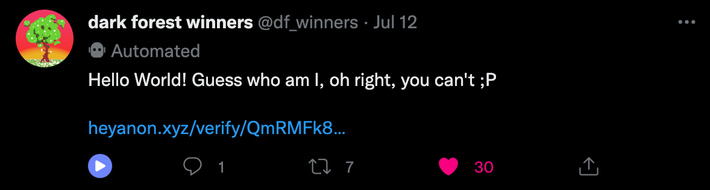
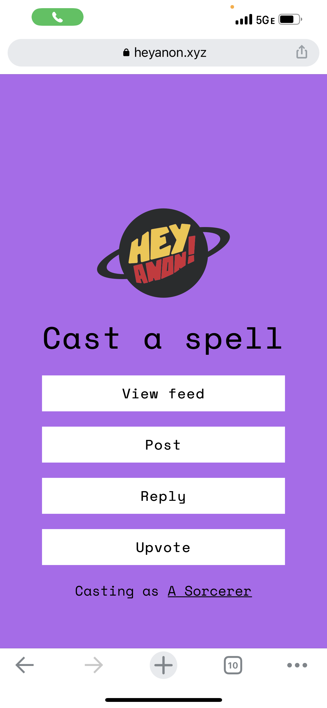
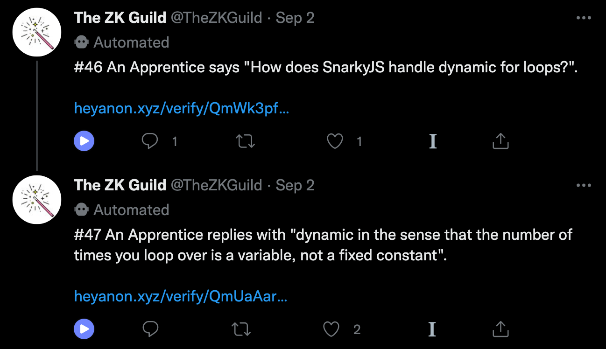
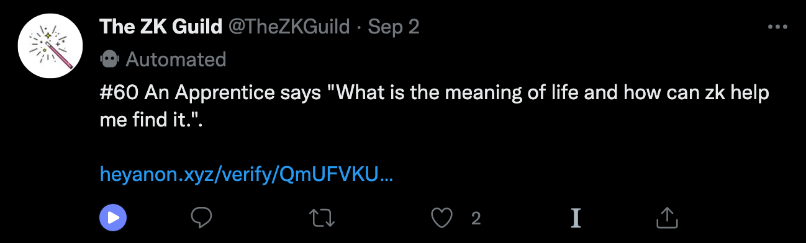
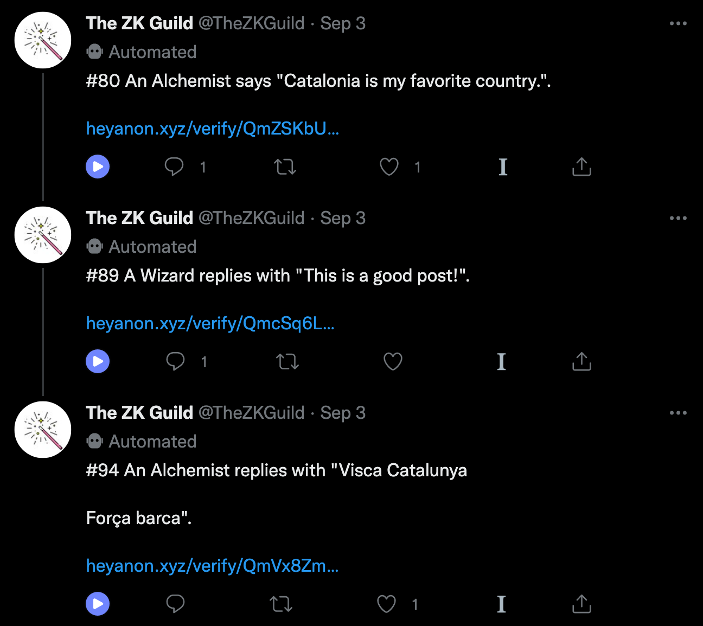

In-person heyanon at SBC
heyanon PSEThe Science of Blockchain Conference (SBC) was held in late August at Stanford University. It was the first major conference since we had launched heyanon.xyz, which meant it was time to hack on an idea I’ve had for a while: in-person groups!
What’s heyanon?
heyanon is an open-source app allowing users to anonymously tweet as a verified member of on and off-chain groups using ZKPs. In a world where users have to choose between the extremes of using their real-world identity or being fully pseudonymous, heyanon is working towards a future where you can select a subset of your identity and reputation to attach to your speech online. Feeds for different groups are curated by the @heyanonxyz Twitter account, which serves as the homepage of the project. Up until SBC, we had primarily focused on Ethereum-based groups like Dark Forest winners & Gitcoin donors, which are composed of ECDSA addresses:

Unfortunately, privately proving membership in an ECDSA group with a SNARK is very expensive, between costly elliptic curve operations and a keccak256 hash to convert public keys to addresses. We’re putting a LOT of work into improving this process (to be explored in upcoming blog posts!) but it is still far from being fast enough to run on compute-constrained environments like mobile devices.
However, our good friends at PSE saw this coming from miles away and created a more efficient private group membership primitive: Semaphore, built on the SNARK-friendly Poseidon hash! Their codebase and documentation is wonderful, and they explain the construction better than I ever could here.
For the sake of this post, you can think of the Semaphore construction as setting the user’s private key to be a string $s$ and their public key to be $\text{Poseidon}(s)$.
You can then prove ownership of a private key $sk$ corresponding to a public key $pk$ with a SNARK: pass $sk$ as a private input and $pk$ as a public input, and then verify $pk = \text{Poseidon}(sk)$.
Private group membership is achieved by additionally doing a merkle tree membership proof of $pk$ inside the SNARK. This works out to a constant number of Poseidon hashes, which is efficient enough that these proofs can be generated on a mobile device in a few seconds!
In-person heyanon?
As clever as Semaphore is, there aren’t that many Semaphore groups in the wild yet. However, because the private key is just a string $s$, Semaphore makes setting up in-person groups very simple. The method we opted for was to randomly generate private keys for members, and then just hand them out in QR code form:
We printed out 200 of these codes on business cards, and handed them out to attendees of SBC’s Applied ZK Workshop as they entered in. If they scanned the QR code, it took them to a page where they could ZK prove they knew one of the private keys in the 200-person SBC group and then post a message anonymously to @TheZKGuild Twitter feed.
But just being able to anonymously post as a verified conference attendee isn’t very interesting. So we had two add-ons to spice things up.
First, instead of everyone being an “attendee”, we put people in different groups based on their role in the conference: attendees, presenters, previous attendees, and organizers. This allowed for people to attach some “reputation” to their tweets, enabling a new dimension of communication without sacrificing too much anonymity.
Second, we used the @TheZKGuild primarily for anonymous Q&A during presentations. ZK tech can be quite complex, and asking a question in front of the world’s best cryptographers can be pretty scary. So we reasoned that having an anonymous feed to post questions would make it easier for confused folks to speak up, and thus let everyone understand the material better!
Highlighting the magic of ZK
Any ZK developer will tell you that their work feels like a glitch in the universe. It shouldn’t be possible to get privacy, succinctness, and verifiability all in one tool, but all the math works out. But in my opinion, technical terms like “witnesses”, “proving”, “verify”, “zero-knowledge”, and “elliptic curve pairings” mask how utterly magical this technology is to the average person.
So a separate goal of in-person heyanon was to use magical terminology for every part of the ZK stack, just to try something new. The Semaphore private key became your artifact. Instead of creating proofs, you used your artifact to cast spells. Each of the conference roles became magical too: attendees were magicians, presenters were wizards, previous attendees were alchemists, and organizers were sorcerers. Here’s what the UI looked like:

Isn’t that so much more fun than the technical terms?
Feed highlights
@TheZKGuild became our most successful account, with 50+ distinct tweets sent over the course of the weekend. Here are some of my favorites:

A legit question and a legit response. Nice!
Is that you Rick? (btw season 6 has been so good so far)

ZK getting people philosophical…fair enough…

Finally, a little tweet exchange supporting Catalonia. A guess I have for the “Alchemist” is Vitalik (a previous workshop attendee who spent some time in Barcelona before Ethereum was founded). And a guess I have for the “Wizard” is Jordi Baylina (a workshop presenter who is a big Catalonia supporter). But the beauty of heyanon is I’ll never know for sure!
PSE’s 10x better version: TAZ
The SBC heyanon experiments were hacked together 1-2 days before SBC, so some sacrifices were made for ease of implementation and usage. One major shortcoming was that all private keys were generated prior to the event by me. This meant the UX was super smooth for users as they didn’t have to register a new keypair, but it technically gave me the power to impersonate any role. To maintain integrity of the feed, I ended up not posting anything except a shoutout to PSE for building Semaphore. Another major shortcoming was that groups were stored in a standard centralized database. This meant I could technically revoke or block certain public keys without users knowing!
Unbeknownst to me, PSE had been hacking on a more secure and better designed version of in-person groups for Devcon, which they’ve termed the Temporary Anonymous Zone (TAZ). Instead of handing out private keys directly, they hand out single-use invite links. When a user signs up, TAZ randomly generates a private key for them and stores it in the browser’s localStorage, meaning TAZ never interacts with it. They also maintain the group in a public Semaphore smart contract, which prevents any malicious tampering from occurring.
I’ll hype up TAZ more in a follow-up post! Make sure to go to their booth if you’re attending Devcon.